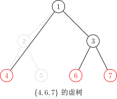
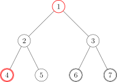

虚树
引入
「SDOI2011」消耗战
题目描述
在一场战争中，战场由
侦查部门还发现，敌军有一台神秘机器。即使我军切断所有能源之后，他们也可以用那台机器。机器产生的效果不仅仅会修复所有我军炸毁的桥梁，而且会重新随机资源分布（但可以保证的是，资源不会分布到
输入格式
第一行一个整数
接下来
第
接下来
输出格式
输出有
数据范围
对于
朴素做法
对于上面那题，我们不难发现——如果树的点数很少，那么我们可以直接跑 DP。
首先我们称某次询问中被选中的点为——「关键点」。
设
设
则枚举
- 若
不是关键点： ； - 若
是关键点： 。
很好，这样我们得到了一份
听起来很有意思。
优化做法
我们不难发现——其实很多点是没有用的。以下图为例：
如果我们选取的关键点是：

图中只有两个红色的点是 关键点，而别的点全都是「非关键点」。
对于这题来说，我们只需要保证红色的点无法到达
通过肉眼观察可以得出结论——
观察题目给出的条件，红色点（关键点）的总数是与
因此我们需要 浓缩信息，把一整颗大树浓缩成一颗小树。
虚树 Virtual Tree
由此我们引出了 「虚树」 这个概念。
我们先直观地来看看虚树的样子。
下图中，红色结点是我们选择的关键点。红色和黑色结点都是虚树中的点。黑色的边是虚树中的边。



因为任意两个关键点的 LCA 也是需要保存重要信息的，所以我们需要保存它们的 LCA，因此虚树中不一定只有关键点。
不难发现虚树中祖先后代的关系并不会改变。（就是不会出现原本
但我们不可能
我们的当务之急就是如何构造虚树。
在提出方案之前，我们先确认一个事实——在虚树里，只要保证祖先后代的关系没有改变，就可以随意添加节点。
也就是，如果我们乐意，我们可以把原树中所有的点都加入虚树中，也不会导致 WA（虽然会导致 TLE）。
因此，我们为了方便，可以首先将
第一种构造过程：二次排序 + LCA 连边
因为多个节点的 LCA 可能是同一个，所以我们不能多次将它加入虚树。
非常直观的一个方法是：
- 将关键点按 DFS 序排序；
- 遍历一遍，任意两个相邻的关键点求一下 LCA，并且判重；
- 然后根据原树中的祖先后代关系建树。
具体实现上，在 关键点序列 上，枚举 相邻的两个数，两两求得 LCA 并且加入序列
因为 DFS 序的性质，此时的序列
所以我们把序列
最后，在序列
为什么连接
证明
如果
如果
所以连接
另外第一个点没有被一个节点连接会不会有影响呢？因为第一个点一定是这棵树的根，所以不会有影响，所以总边数就是
因为至少要两个实点才能够召唤出来一个虚点，再加上一个根节点，所以虚树的点数就是实点数量的两倍。
时间复杂度
实现
int dfn[MAXN];
int h[MAXN], m, a[MAXN], len; // 存储关键点
bool cmp(int x, int y) {
return dfn[x] < dfn[y]; // 按照 dfs 序排序
}
void build_virtual_tree() {
sort(h + 1, h + m + 1, cmp); // 把关键点按照 dfs 序排序
for (int i = 1; i < m; ++i) {
a[++len] = h[i];
a[++len] = lca(h[i], h[i + 1]); // 插入 lca
}
a[++len] = h[m];
sort(a + 1, a + len + 1, cmp); // 把所有虚树上的点按照 dfs 序排序
len = unique(a + 1, a + len + 1) - a - 1; // 去重
for (int i = 1, lc; i < len; ++i) {
lc = lca(a[i], a[i + 1]);
conn(lc, a[i + 1]); // 连边，如有边权 就是 distance(lc,a[i+1])
}
}
其实这样就足以构造一棵虚树了。
第二种构造过程：使用单调栈
如何使用单调栈构造虚树？
首先我们要明确一个目的——我们要用单调栈来维护一条虚树上的链。
也就是一个栈里相邻的两个节点在虚树上也是相邻的，而且栈是从底部到栈首单调递增的（指的是栈中节点 DFS 序单调递增），说白了就是某个节点的父亲就是栈中它下面的那个节点。
首先我们在栈中添加节点
然后接下来按照 DFS 序从小到大添加关键节点。
假如当前的节点与栈顶节点的 LCA 就是栈顶节点的话，则说明它们是在一条链上的。所以直接把当前节点入栈就行了。

假如当前节点与栈顶节点的 LCA 不是栈顶节点的话：

这时，当前单调栈维护的链是：
而我们需要把链变成：

那么我们就把用虚线标出的结点弹栈即可，在弹栈前别忘了向它在虚树中的父亲连边。
假如弹出以后发现栈首不是 LCA 的话要让 LCA 入栈。
再把当前节点入栈就行了。
下面给出一个具体的例子。假设我们要对下面这棵树的 4，6 和 7 号结点建立虚树：
那么步骤是这样的：
- 将 3 个关键点
按照 DFS 序排序，得到序列 。 - 将
入栈。

我们用红色的点代表在栈内的点，青色的点代表从栈中弹出的点。
- 取序列中第一个作为当前节点，也就是
。再取栈顶元素，为 。求 和 的 LCA： 。 - 发现
栈顶元素，说明它们在虚树的一条链上，所以直接把当前节点 入栈，当前栈为 。

- 取序列第二个作为当前节点，为
。再取栈顶元素，为 。求 和 的 LCA： 。 - 发现
栈顶元素，进入判断阶段。 - 判断阶段：发现栈顶节点
的 DFS 序是大于 的，但是次大节点（栈顶节点下面的那个节点） 的 DFS 序是等于 LCA 的（其实 DFS 序相等说明节点也相等），说明 LCA 已经入栈了，所以直接连接 的边，也就是 LCA 到栈顶元素的边。并把 从栈中弹出。

- 结束了判断阶段，将
入栈，当前栈为 。

- 取序列第三个作为当前节点，为
。再取栈顶元素，为 。求 和 的 LCA： 。 - 发现
栈顶元素，进入判断阶段。 - 判断阶段：发现栈顶节点
的 DFS 序是大于 的，但是次大节点（栈顶节点下面的那个节点） 的 DFS 序是小于 LCA 的，说明 LCA 还没有入过栈，所以直接连接 的边，也就是 LCA 到栈顶元素的边。把 从栈中弹出，并且把 入栈。 - 结束了判断阶段，将
入栈，当前栈为 。

- 发现序列里的 3 个节点已经全部加入过栈了，退出循环。
- 此时栈中还有 3 个节点：
，很明显它们是一条链上的，所以直接链接： 和 的边。 - 虚树就建完啦！

我们接下来将那些没入过栈的点（非青色的点）删掉，对应的虚树长这个样子：

其中有很多细节，比如用邻接表存图的方式存虚树的话，需要清空邻接表。但是直接清空整个邻接表是很慢的，所以我们在 有一个从未入栈的元素入栈的时候清空该元素对应的邻接表 即可。
实现
建立虚树的 C++ 代码大概长这样：
代码实现
bool cmp(const int x, const int y) { return id[x] < id[y]; }
void build() {
sort(h + 1, h + k + 1, cmp);
sta[top = 1] = 1, g.sz = 0, g.head[1] = -1;
// 1 号节点入栈，清空 1 号节点对应的邻接表，设置邻接表边数为 1
for (int i = 1, l; i <= k; ++i)
if (h[i] != 1) {
// 如果 1 号节点是关键节点就不要重复添加
l = lca(h[i], sta[top]);
// 计算当前节点与栈顶节点的 LCA
if (l != sta[top]) {
// 如果 LCA 和栈顶元素不同，则说明当前节点不再当前栈所存的链上
while (id[l] < id[sta[top - 1]])
// 当次大节点的 Dfs 序大于 LCA 的 Dfs 序
g.push(sta[top - 1], sta[top]), top--;
// 把与当前节点所在的链不重合的链连接掉并且弹出
if (id[l] > id[sta[top - 1]])
// 如果 LCA 不等于次大节点（这里的大于其实和不等于没有区别）
g.head[l] = -1, g.push(l, sta[top]), sta[top] = l;
// 说明 LCA 是第一次入栈，清空其邻接表，连边后弹出栈顶元素，并将 LCA
// 入栈
else
g.push(l, sta[top--]);
// 说明 LCA 就是次大节点，直接弹出栈顶元素
}
g.head[h[i]] = -1, sta[++top] = h[i];
// 当前节点必然是第一次入栈，清空邻接表并入栈
}
for (int i = 1; i < top; ++i)
g.push(sta[i], sta[i + 1]); // 剩余的最后一条链连接一下
return;
}
于是我们就学会了虚树的建立了！
对于消耗战这题，直接在虚树上跑最开始讲的那个 DP 就行了，我们等于利用了虚树排除了那些没用的非关键节点！仍然考虑
- 若
不是关键点： - 若
是关键点：
于是这题很简单就过了。
推荐习题
创建日期: 2018年7月30日